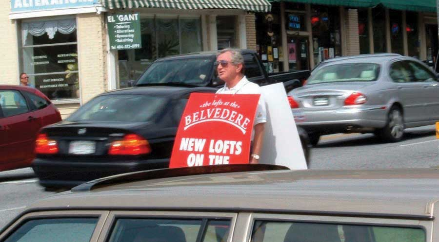

Figure 2.1 Build a Foundation
Advertising is in trouble only if you think of the narrow box advertising has traditionally been in, which is getting on TV or in print.
Linda Kaplan Thaler, Founder, Kaplan Thaler Group
This is not a book about advertising.
This is a book about touching consumers where they live—and work and play. Now that we’ve met some of the folks from SS+K and msnbc.com, let’s take a look at the fundamentals the members of these teams have under their belts. We’ll pick back up with them in Chapter 4 "Consumers and the Communications Process: SS+K Gets to Know Its Consumers" to follow how they’ve applied these fundamentals from Chapter 2 "A User’s Manual: Advertising, Promotion, and Marketing Essentials" and Chapter 3 "Advertising and Society".
After studying this section, students should be able to do the following:
Hammers and screwdrivers did the trick for years, but today marketing communications professionals have a whole new box of power tools. The marketing to-do list is long and so is the list of instructions.
Agencies and their clients sorted madly through the box for the past decade as they tried to find the most effective tools for the job. Now, an avalanche of new technology adds to an increasingly daunting pile. It’s hard for some experienced advertising professionals to let go of what they “know.” “There’s still a little fear out there about shifting away from the traditional marketing tactics,” said Doug Scott, executive director for branded content and entertainment for the North American operations of Ogilvy & Mather Worldwide, part of the WPP Group, in 2006.Stuart Elliott, “Nike Reaches Deeper into New Media to Find Young Buyers,” New York Times Online, October 31, 2006, http://www.nytimes.com/2006/10/31/business/media/31adco.html?_r=1&oref=slogin&fta=y&pagewanted=print (accessed January 30, 2009).
But some marketers get it. They understand that advertising is a key driver of popular culture in addition to just reflecting what is going on in our world. Think about Burger King, for example: How does a company that sells dead meat sandwiches and strips of deep-fried potatoes dig its way deep into popular consciousness and (dare we say it?) actually become cool? As CEO John Chidsey (who refers to himself as Chief Whopper Flipper) explains, “We want to stay on the cutting edge of pop culture.” How cool is it to sell more than three million Burger King–branded Xbox video games in two months? Or to get its creepy icon The King included in seventeen skits on Jay Leno in the same amount of time? How about having a highly visited profile on MySpace, or posting your menu as a video on YouTube (http://www.youtube.com/v/7-QFQOfkZ1k)?Quoted in Bruce Horovitz, “Burger King of Cool?” USA Today, February 6, 2007, http://www.usatoday.com/money/industries/food/2007-02-06- burger-king-usat_x.htm (accessed July 3, 2008). There’s something more than basic burger ads going on here.
Fifteen years ago, we defined advertising agencies by the essential tools they used: television commercials, radio spots, billboards, print ads. But today traditional advertising approaches, even in the hands of our most skilled and lauded practitioners, are no longer good enough.
Before we see how things are changing, let’s back up and start with a traditional definition: AdvertisingNonpersonal communication from an identified sponsor intended to inform consumers or persuade or remind them to buy a certain product or service. is nonpersonal communication from an identified sponsor that intends to inform, persuade, and/or remind. Now let’s break that down a bit so we understand what advertising is—and how it differs from other forms of marketing communication:
Later we’ll talk about other kinds of marketing communication (such as sales promotions) and see how they differ from advertising. For now, suffice it to say that the lines are blurring and the tried and true is no longer so true. For example, while it’s mostly accurate to say that advertising comes from nonpersonal communications sources, today some companies recruit “brand ambassadors” who literally become walking billboards for their brands. They may get a tattoo of the company’s logo, or in some cases (we’re not making this up) name their children after a brand in exchange for some kind of payment. Or, consider the growing use of human directionals, which is what the advertising industry calls people who twirl signs outside restaurants, barbershops, and new real estate subdivisions. Southern California in particular has become a mecca for this new “sport” as locals cook up new moves to out-style their competitors. These include the Helicopter, in which a spinner does a backbend on one hand while he twirls a sign above his head. Then there’s the popular Spanking the Horse, where the human directional puts the advertising sign between his legs, slaps his own behind, and giddy-ups.Alana Semuels, “The Fine Art of Making a Point: ‘Human Directionals’—Those Guys Spinning Advertising Arrows—Can Cost $60 an Hour. Some of Their Best Moves Are Filed in the Patent Office,” Los Angeles Times, May 1, 2007, http://www.Latimes.Com/Business/La-Fi-Spinners1may01,0,7358645 (accessed July 8, 2008).
In addition, it’s no longer necessarily crystal clear just who (if anyone) is the sponsor of a message. For example, we’ll learn later about some guerrilla marketingA tool in the promotional mix in which public relations professionals stage an event to “ambush” consumers with messages in places they’re not expecting to encounter them. tactics that involve paid performers who impersonate everyday people and endorse products in public places. No, you’re not paranoid—they really are trying to fake you out. Finally, as we’ll see, the Web is in some ways taking the “mass” out of “mass media.” New technologies allow advertisers to customize messages so that (literally) each person who sees an ad actually gets a personalized communication that reflects his or her own unique interests and past purchases.
Figure 2.2
A human billboard tries to drum up business for a Realtor in Atlanta.
However, these innovative (and sort of scary) techniques remain in the minority of advertising efforts—at least for now. The reality is that most advertising agencies (and their clients) have been sleeping with their eyes open. According to an online survey of 184 marketers recently cited in the Wall Street Journal, “Less than 24 percent of those polled considered their companies ‘digitally savvy,’ citing several issues, including ‘lack of experience in new media’ and ‘dearth of digital talent.’”Suzanne Vranica, “Password to Marketers’ Meeting: Digital Survey Finds Spending Is Weak Despite Change in Consumer Behavior,” Wall Street Journal, October 11, 2007, B6. Still, the world of advertising is changing rapidly—and you’ll be in the forefront of that change.
What is happening to advertising?
Transformation. A melding of forms and disciplines. Evolution of species.
Despite conventional definitions and expectations, we need to understand that advertising isn’t just about ads. Messages that sell may not originate with marketers or agencies, but rather with you. Marketing messages may not be paid for by advertisers. They are multinational and multidimensional, providing any combination of information, identity, and entertainment.
They don’t stay in place. Today, most any place is ad space (maybe even your own forehead!). By emphasizing the visual and experiential, today’s advertising messages are difficult to analyze critically. By incorporating authentic experience and online collaboration, new marketing is very difficult to predict and control. An old Chinese curse says, “May you live in interesting times.” We do.
There is a fundamental change in the advertising vehicles themselves as media and technology converge. Traditional radio is losing share to digital options, online “television” viewing is increasingly popular, and marketers continue to divert print dollars to online budgets.“Traditional Radio’s Digital Competition Increases in Q4,” http://www.marketingcharts.com/radio/traditional-radios-digital- competition-increases-in-q4-2125 (accessed January 30, 2009). Once thought to be a specialized type of advertising, now interactive/online approaches often are a fundamental way to engage consumers—especially younger digital natives who have grown up on MySpace, IM, and YouTube. Yet in an article on how advertisers seek less intrusive, more measurable ways to deliver online messages, the Wall Street Journal reports, “Many sites and advertisers remain in the throes of experimentation, with mixed or disappointing results to date. Some say the industry hasn’t yet figured out how to make video ads as interactive and effective as they can be.”Kevin J. Delaney and Emily Steel, “Are Skins, Bugs or Tickers the Holy Grail of Web Advertising?” Wall Street Journal, August 13, 2007, B1.
Clients are similarly challenged. They no longer have the luxury of telling you only what they want you to know about their brand. Today, you can ask your neighbor or a Norwegian sitting in an Internet café while he’s vacationing in Majorca about that new bottled water you’ve been thinking about trying—all you need to do is type in a few well-chosen key words on your Google search bar and you’re off to the races.
It didn’t take long for some forward-thinking marketers to ask how they could use blogs for their own purposes. However, as recently as 2006 a poll showed just how far most Fortune 1000 executives have to go to catch up with the consumers with whom they hope to engage in dialogue. Only 30 percent said they understood the meaning of the term Internet blog, while 12 percent reported their companies had resorted to legal action to stop a blog that someone else had posted about their company!“Fortune 1000 Senior Executives’ Opinions Regarding Blogs and Their Company,” http://goliath.ecnext.com/coms2/gi_0199-6832426/Fortune- 1000-senior-executives-opinions.html (accessed July 3, 2008). The executives know there is a new tool out there. Most don’t understand or use it themselves. But their first instinct is that it must be reined in and controlled.
Like many marketers now, they battle twin fears: being late to the game and lacking the proper skills required to play. The danger is in choosing nontraditional routes uncritically because they have the cachet of being on the “bleeding edge.” According to Marc Schiller, chief executive of the digital-marketing shop Electric Artists, “There is always this pressure of saying we weren’t early enough on MySpace. We weren’t early enough on Facebook.…Suddenly there is this herd mentality and people are doing it because they feel like if they are not there, they are missing out.”Emily Steel, “Marketers Explore New Virtual Worlds. Some Create Own as Second Life Site Loses Some Luster,” Wall Street Journal, October 23, 2007, B9.
A word of caution: in a business like advertising that prides itself on cultural currency, there is always a temptation to choose interactive solutions solely because you can. Sometimes, however, the best answer to a marketing problem is as low-tech and simple as the vivid yellow LIVESTRONG bands on your friends’ wrists. But before we talk about where we’re going, let’s talk about where we’ve been.
It’s time to take a step back and first learn a bit about where advertising came from and how many organizations still do it today.
Advertising has been with us since the days of ancient Greece, when announcements were etched on stone tablets or shouted by town criers. While Pizza Hut painted its logo on a Russian rocket and delivered a pizza to the Mir Space Station, in reality many of the ad formats we see today haven’t fundamentally changed in hundreds of years.“Cosmonaut to Tee Up for Monster Orbital Golf Shot (Reuters),” NowPublic, November 18, 2006, http://www.nowpublic.com/cosmonaut_to_tee_up_ for_monster_orbital_golf_shot_reuters (accessed February 13, 2009).
Advertising in the United States began before we were even a nation. Colonial Americans saw ads on posters and in newspapers—the first newspaper ad was for real estate and appeared in 1704. For a comprehensive timeline covering the history of advertising, check out http://adage.com/century/timeline/index.html. The true rise of modern advertising, however, coincided with the Industrial RevolutionA period in the early nineteenth century when the economic system based on manual labor gave way to the modern system of producing goods in factories. for three reasons:
Early examples of mass media include the New York Times, which published its first issue in 1851 (it was then called the New-York Daily Times). The New York Tribune doubled its advertising between October 1849 and October 1850. The magazines Harper’s Bazaar and Vanity Fair debuted in 1867 and 1868, respectively. By 1870, 5,091 newspapers were in circulation in the United States.
Capitalism also fueled advertising as it created a growing middle class that could afford to buy an array of consumer products. Soon the proliferation of mass-distributed consumer goods sparked the rise of the advertising profession. As competing manufacturers grew and more products were available on the market, the need to distinguish one’s products from the rest of the pack created a need for professional advertising agents, and advertising grew from an emerging to a legitimate profession. In 1890, the J. Walter Thompson Company (the oldest continuously operating advertising agency in the United States) had billings totaling over $1 million (in those days, a million was still a lot of money!).
Today, the realm of advertising has expanded vastly beyond newspapers—way beyond. Consider Target’s recent ads that entertained passersby at New York’s Grand Central Station. The retailer showcased its designer apparel in a spooky fashion show that repeated every ten minutes; it used holograms (two-dimensional moving images that give the illusion of having three dimensions) to project images of garments (sans models) prancing down a surreal runway.Ann Zimmerman, “Target Campaign Goes ‘Model-Less,’” Wall Street Journal, October 29, 2007, B4. Yes, we’ve come a long way from stone etchings.
In addition to holograms, take a look at all the media channels available to advertisers today.
Print advertisingPlacement of ads in newspapers, magazines, the Yellow Pages, and classified columns. includes national, regional, and local newspapers, as well as magazines, which, like newspapers, can be geographical or subject based. For example, Dog Fancy reaches dog lovers across the nation.
Direct mailAdvertising sent directly to people’s homes through brochures, letters, and catalogs. is advertising sent directly to people’s homes through postcards, brochures, letters, and catalogs. Sponsored e-mails are a new form of “direct mail.”
Specialty print mediaBooklets, folders, and CD/DVD inserts. include booklets, folders, and CD/DVD inserts developed to provide targeted groups with specialized information on products and services.
The broadcast mediaRadio and television. consist of television and radio.
We subdivide television (TV)Communications medium that allows viewers to see and hear a program; television became widely available in the 1940s and now includes major networks, independent stations, cable, broadband, and satellite. according to major networks, independent stations, cable, broadband, and satellite.
RadioThe first broadcast medium, bringing free advertising to American homes from the 1920s onward, which transmits sound through airwaves. Radio can be local or network., which was the first broadcast medium (bringing free advertising to American homes from the 1920s onward), can be local or network.
Also known as out-of-home advertising, outdoor advertisingAlso known as out-of-home advertising, outdoor advertising includes billboards on roadsides and posters on transit (buses, subways, rail, airports, trucks, and taxis), at gas pumps, and on park benches. includes billboards on roadsides, and posters on transit (buses, subways, rail, airports, trucks, and taxis), at gas pumps, and on park benches.
Point-of-purchase (POP) displaysDisplays next to cash registers or elsewhere in retail environments—we often find them at the point where customers are ready to buy. refer to displays next to cash registers or elsewhere in retail environments—we often find them at the point at which people are ready to buy.
Pop-ups, pop-unders, banners, and text ads associated with Web pages provide targeted online advertisingPop-ups, pop-unders, banners, and text ads associated with Web pages. on the Web.
U.S. consumers go to the Web 15 percent of the time they spend with all media. This online migration makes the Web where the action is for many advertisers. Most big, traditional companies were very cautious about marketing online, but now they’re cranking up their efforts as this media channel continues to gain legitimacy. According to John Galloway, vice president of sports, media, and interactive marketing at PepsiCo Inc.’s Pepsi-Cola North America unit, “Our job is to invest in where consumers are engaging with media.”
And online is where they’re going. For example, General Mills spends about double on online advertising what it laid out just one or two years ago, while Kraft reports similar numbers. Some media analysts believe the pattern of Web spending will mimic what they saw in earlier times with spending on broadcast and cable TV—both media benefited from huge growth once they reached a tipping point in terms of consumer adoption. This trend bodes well for companies like Yahoo! and Google that make their money from online search and advertising. But these consumer packaged goods (CPG) companiesProducers of food and beverages, cleaning products and paper goods, apparel, and other items that a typical consumer purchases on a regular and frequent basis. still have some catching up to do: in 2005, consumer packaged goods accounted for more than 11 percent of the $145 billion in U.S. ad spending, but CPG companies spent just 1.6 percent of their ad dollars online on average, compared with an overall average of 5.8 percent of total ad spending for U.S. advertisers.Kevin J. Delaney, “Once-Wary Industry Giants Embrace Internet Advertising,” Wall Street Journal, April 17, 2006, A1.
Check out some online ads for packaged goods companies like General Mills and Kraft to see how they’re making this transition from traditional media. For example, you can find some nice recipes at Kraft’s http://www.kraft.com/switch-site.htm. What could the company do to increase the appeal of this site? If you wanted to appeal to consumers who spend a lot of time browsing online, what changes might you make?
Sales promotionsA basic tool in the promotional mix; any activity intended to produce short-term change in behavior, including limited-time incentives for consumers and for trade partners. build interest in or encourage purchase of a good or service during a specified period. These activities range from coupons that we receive in our newspapers to contests and sweepstakes to sales competitions a company might host for its own employees.
Specialty advertisingGiving away merchandise to promote awareness of a company at trade shows or conferences or in mail campaigns. involves the distribution of merchandise (called promotional productsA tool in the promotional mix also known as swag: free merchandise such as pens, coffee mugs, and polo shirts emblazoned with a company’s logo, intended to keep the brand top of mind., premiumsA tool in the promotional mix that gives consumers a free item with purchase of another item., or swagItems such as mugs, pens, or hats imprinted with a company’s name, logo, or slogan.) to promote awareness of a company. These include coffee mugs, pens, jackets, and many items that are usually imprinted with a company’s name, logo, or slogan and given away at trade shows or conferences or in mail campaigns.
These days, many advertisers strive to get consumers to help get the word out about a product or service. The reason is simple: people trust the recommendations of others more than they trust paid advertising. Almost 90 percent of people say they trust recommendations from consumers compared to less than 50 percent who trust radio ads and less than 10 percent who say they trust online banner ads.Forrester Research Inc. and Intelliseek, http://www.nielsenbuzzmetrics.com/cgm. It’s fair to say that user-generated contentOnline venues such as blogs or Web sites where consumers review products they have bought or ask questions about a product. UGC can be in video, comment, or other parody as well. is one of the biggest advertising and promotion stories of this decade.
How believable are advertisements that big companies sponsor? Is buzz truly more effective than a glitzy ad with a highly paid celebrity who tells you to use a company’s product or service? Find some cool print ads and show them to your friends. Ask them to talk about how effective they think the ads are and why they do or don’t make it more likely that they’ll actually buy the advertised brand.
Ad agencies are well aware that many consumers watch TV with their TiVo firmly in hand, ready to skip through their wonderful ads. People read fewer newspapers as well (especially college students!). Advertisers lose a lot of sleep worrying about how to get their clients’ brands noticed in this ad-hostile environment. This means moving away from traditional advertising and the model of adding prepackaged ads to precreated content.
Ad-supported contentContent that advertisers explicitly create or modify to feature products or services. (content that advertisers explicitly create or modify to feature products or services) has grown exponentially in the early twenty-first century. The trend toward integrating advertising messages with program content continues to accelerate, and new variations appear all the time. For example, product placementNew media technique in which a show’s story line incorporates a branded product, typically in TV shows and movies. refers to the insertion of real products in fictional movies, TV shows, books, and plays. Many types of products play starring (or at least supporting) roles in our culture; in 2007, for example, the most visible brands ranged from Coca-Cola and Nike apparel to the Chicago Bears football team and the Pussycat Dolls band.“Top 10 Product Placements in First Half of ’07,” Marketing Daily, September 26, 2007, http://www.mediapost.com (accessed September 26, 2007). This practice has become so commonplace and profitable now that it’s evolving into a new form of promotion we call branded entertainmentNew media technique in which advertisers showcase their products via longer-form narrative films instead of brief commercials., where advertisers showcase their products in longer-form narrative films instead of brief commercials. For example, SportsCenter on ESPN showed installments of “The Scout, presented by Craftsman at Sears,” a six-minute story about a washed-up baseball scout who discovers a stunningly talented stadium groundskeeper.Nat Ives, “Commercials Have Expanded into Short Films with the Story as the Focus rather than the Product,” New York Times on the Web, April 21, 2004, http://query.nytimes.com/gst/fullpage.html?res=9402E2DF163 AF932A15757C0A9629C8B63 (accessed February 13, 2009).
We’ve seen that advertisers have many, many more weapons in their arsenal than they used to. With all of these exciting options available, it’s tempting to conclude that traditional methods like a TV commercial or a magazine space ad are history. Is traditional advertising dead?
Don’t write an obituary for traditional advertising—at least not yet. It’s true that fewer people may be watching TV, especially the major networks, but TV is still the medium that reaches the greatest number of people at the same time. That’s why advertisers continue to pay top dollar to make and air TV commercials. But the industry is shifting from the sell-and-tell mindset that traditionally prevailed in broadcast and print media. The new mindset engages people in a conversation. This perspective understands that advertising needs to show customers how a product will satisfy their needs—and do it better than the competition. Broadcast media builds awareness of a brand, but, as SS+K’s Rob Shepardson says, awareness is only “the first step of the process.” Advertising and promotion must now build the relationship, too. Understanding the components of this relationship is part of the marketing discipline. Let’s turn to that next.
Advertising has been with us for thousands of years. As technologies develop and competition for consumers’ attention increases, advertisers need to keep alert to new media formats in addition to relying on the traditional platforms they’ve used for many years.
After studying this section, students should be able to do the following:
Marketing: Typically when people hear the word marketing they think it means either advertising or selling. Others even think of it in a very negative way, as in, “That’s not really true. It’s just marketing.” In reality, marketing relates to both advertising and selling, but it’s not the same thing as either term. And let’s hope the second perspective isn’t true!
According to the American Marketing Association, “MarketingThe processes involved in creating, communicating, delivering, and exchanging offerings that have value. is the activity, set of institutions, and processes for creating, communicating, delivering and exchanging offerings that have value for customers, clients, partners, and society at large.”MarketingPower.com, “Marketing Definitions,” http://www.marketingpower.com/content4620.php (accessed April 17, 2008). That’s a pretty long-winded definition—but when you boil it down, it basically means that marketing is about all parties to a transaction walking away with something of value. Thus, marketers ideally try to satisfy everyone involved in the process, including those who make a product or promote an idea, those who advertise it, and those who purchase it or endorse it.
And the process is in many ways the same regardless of what the transaction is about—whether it’s a can of peas, a reggae concert, a blood drive, or a political campaign. In each case marketing is about satisfying needs. A needThe difference between a consumer’s actual state and some ideal or desired state. is the difference between a consumer’s actual state and some ideal or desired state. For example, if you drive a junky old car but you crave a hot ride, you have a need. If you know that a poor child in a third world country goes without proper food and you believe she should have access to healthy meals, you also have a need.
Most successful organizations today practice the marketing conceptThe process in which marketers first identify customers’ needs and then provide products or services that satisfy those needs.; marketers first identify customers’ needs and then provide products or services that satisfy those needs. A product delivers a benefitAnything that, when delivered, satisfies a need. when it satisfies a need. It probably won’t surprise you to learn that a lot of advertising tries to show consumers just how a product, service, or idea will do a good job of satisfying a need as it informs, persuades, or reminds.
Advertising is one important element in the marketer’s strategic toolbox. We call this toolbox the marketing mixThe tools the organization uses to create a desired response among a set of predefined consumers., which consists of the tools the organization uses to create a desired response among a set of predefined consumers. These tools include the product itself, the price of the product, the promotional activities that introduce it to consumers, and the places where it is available. We commonly refer to the elements of the marketing mix as the Four PsProduct, place, price, and promotion.: product, place, price, and promotion. The word mix reminds us that no single marketing activity is sufficient to accomplish the organization’s objectives; the key is to blend these together to create the desired impact. Let’s take a closer look at each of these four basic tools.
ProductA good, service, or idea that can be marketed., broadly defined, is a good, service, or idea. Sometimes the “product” can even be a person, such as a political candidate. SS+K’s work for (now President) Barack Obama certainly illustrates that idea. A product may consist of a single item, such as a printer, or a portfolio of interrelated items such as a package that includes a printer, specialized software, and online photo-sharing services.
It’s important to remember that the product you sell is a lot more than the physical item the company manufactures. We also have to think about augmented productsAspects of the product or service that help the consumer to use the core product, such as a warranty or an instruction book.; aspects of the product or service that help the consumer to use the core productThe basic good or service that is being sold.. These augmented products include components like a warranty for a vacuum cleaner, the soft drinks an airline serves, and the instructions (maybe even written in English) that come with your new camera.
Figure 2.6

CREDO Mobile, an SS+K client, includes a distinctive logo and design on its phones as part of its product strategy. This design communicates the unique offering of CREDO Mobile from other standard phones.
PackagingAn augmented product that provides value in terms of storing a product and allowing it to be transported safely and that makes a product visually distinctive to customers. is a very important augmented product; in addition to the value it provides in terms of storing a product and allowing it to be transported safely, packaging fulfills the important role of making a product visually distinctive to customers. “Consumers are looking for what’s new,” said Kimberly Drosos, director for package development at Unilever North America. “They say, ‘What else do you have for me? That was nice last year, but I want the packaging to be refreshing.’” Unilever’s innovative packaging includes Axe shower gel bottles shaped like video-game joysticks.
PlaceWhere a product is offered for sale, e.g., in a local grocery store, a “big box” store, or a vending machine. Marketing strives to make an offering available at a time and location desirable to the customer. refers to where you offer your product for sale, whether it’s at your local grocery store, at a big discounter like Wal-Mart, or at a vending machine in your dorm. A key to successful marketing is to make your offering available at a time and location that are desirable to the customer.
Every product requires a channel of distributionA series of firms or individuals that facilitate the movement of the product from the producer to the final consumer.—a series of firms or individuals that facilitate the movement of the product from the producer to the final consumer. At minimum, a channel of distribution consists of a producer and the customer. This short producer-to-consumer channel is called a direct channelA channel of distribution consisting of a producer and the customer. because the consumer buys directly from the producer. For example, if you buy a peach from a local farmer, you’re using a direct channel. Similarly, when you buy a shirt from the Eddie Bauer catalog or Web site, you’re buying direct.
An indirect channelA channel of distribution that includes one or more intermediaries, such as wholesalers, agents, brokers, or retailers., by contrast, includes one or more intermediaries—such as wholesalers, agents, brokers, or retailers—who help move the product from the manufacturer to the consumer. For example, a farmer in New Zealand may sell apples to a wholesalerA “middleman” in the distribution chain; a merchant who buys goods and sells them to other businesses, not to consumers., who in turn sells the apples to several supermarkets in North America. In this case, each supermarket acts as a retailerThe last point in the distribution chain; a merchant who sells to the final customer.—the last point in the distribution chain, which sells to the final customer.
Today, news is ubiquitous, and most people’s preferred mode of delivery no longer includes a bicycle and a strong throwing arm. On services like msnbc.com, the latest headlines greet us when we flip up our cell phones or pop open our laptops. It’s easy and fast to find coverage of the same story from a variety of sources and to tailor news supply from providers for the types of information we want to see. There are thousands of choices among online news sources, with hard copy newspapers competing against the online versions of themselves and losing. Additionally, aggregators further commodify online news information, lumping together “name brand” news and less pedigreed sources by topic. There is an increasingly thin layer of audience spread across the rapidly proliferating URLs of major and start-up news providers.
Follow Up: “Creative Destruction: An Exploratory Look at News on the Internet,” http://www.ksg.harvard.edu/presspol/carnegie_knight/creative_destruction_web.pdf.
PriceThe amount the consumer pays to acquire a product. is the amount that the consumer pays to acquire a product (but you knew that). Setting a price for a product involves a number of considerations. For example, the seller must decide upon a basis for pricing. Products may be priced by the unit (a single TV or computer), by volume (gasoline), by time of use (monthly cable TV or Internet service), by amount of use (utilities or cell phone minutes), or by performance (overnight versus two-day package delivery).
In addition to the list price, producers may offer discounts and allowances to its channel partners—the firms or individuals in its channel of distribution. The producer may offer each channel partner a different price if they buy in different quantities or if the deal includes cooperative advertisingStrategy in which two or more channel partners agree to promote a product jointly., where two or more channel partners agree to pitch in to promote a product. For example, a candy company and a grocery store might agree to share the cost of a Halloween newspaper circular that includes an advertisement featuring party ideas and coupons for trick-or-treaters.
Figure 2.7

CREDO Mobile pricing chart allows consumers to easily compare their offerings to competitors. The key distinction is that CREDO Mobile and their customers donate part of their bills and profits to progressive causes of their choice. Go to credomobile.com for more information.
For very expensive items, price may also include a payment period and credit terms. This allows consumers to purchase products, such as new cars, that they otherwise would be unable to afford. In some cases, a seller may offer credit incentives to encourage consumers to buy big-ticket items. For example, furniture stores frequently offer customers up to ninety days of free credit (zero percent financing) when they make large purchases such as a sofa or bedroom suite.
Last but definitely not least, the final P is for promotionAll the activities that inform and encourage consumers to buy a given product., which refers to all the activities that inform and encourage consumers to buy a given product. This includes print and broadcast ads, coupons, billboards, personal sales, and online sales. This P is so important that, believe it or not, entire textbooks have been written about it. By the way, you’re reading one now (but you knew that too).
We call a promotional effort aimed at the final customer a promotional pull strategyPromotional effort aimed at the final customer.. The goal is to convince the customers that they want a product, in order to create a “pull” demand in which the customer goes to a store and asks for the product by name. Stores that do not already carry the product may be motivated to carry it in order to satisfy customer demand. So, in this case the customer “pulls” the product through the channel.
Promotion can be targeted at distributors as well as customers. Manufacturers often develop programs designed to motivate channel members to stock certain products. Such a program is called a promotional push strategyPromotional programs designed to motivate channel members to stock certain products.. For example, a software manufacturer like TurboTax may propose a cooperative ad campaign with a software retailer such as Office Max, sharing the cost of an ad that says “Buy your TurboTax at Office Max.” Alternately, TurboTax may offer retailers introductory discounts on TurboTax products to encourage them to promote or prominently display TurboTax products in their stores. If TurboTax advertises these discounts in trade publications that office products store managers read, we call that trade advertisingA type of promotional push strategy; advertising by a manufacturer that aims to entice merchants to stock their product.. In this case the manufacturer tries to “push” its products through the channel down to the end consumer. Promotional push strategies are often less expensive than pull strategies, so a firm with a smaller promotional budget will likely pursue a push strategy.
Figure 2.8

A sales promotion is a time-based strategy to stimulate consumer demand for a product or service. SS+K’s client CREDO Mobile sponsored a promotion to entice customers to give up their current phone service and switch to CREDO. This is a pull strategy.
Marketers look not only at each of the four Ps individually, but also at the interaction of product, price, promotion, and place. They fine-tune and adjust each to meet the needs of the market and create the best outcome for the company. For example, a seller may lower the price of a product during a promotional event. Likewise, holding a special promotional event may affect place because the seller must supply stores with enough products to meet the demand that the promotion will stimulate. Finally, the promotion might affect the product’s packaging, such as bundling a shampoo with a free sample of conditioner.
A new experiment Microsoft Corporation is running illustrates how different elements of the marketing mix can work together. The company is testing a grocery cart–mounted console that helps shoppers find products in the store, then scan and pay for their items without waiting in the checkout line. As they shop, consumers will see video ads playing on these cart screens. But it gets better: Before they leave home, customers with a ShopRite loyalty card log into a Web site and type in their grocery lists. They go to the store and swipe their card on the cart, and the list appears. As they scan their purchases and put them in their cart, they get a running price tally, and their shopping list automatically checks off these items. The system also can sense where the cart is in the store so it can send ads to shoppers just when they wheel by certain key areas—for example, the cart might offer a discount on Lay’s potato chips at the exact moment they walk by the potato chip section.Jessica Mintz, “Cart Console Finds Grocery Items for You,” USA Today, http://www.usatoday.com/tech/news/techinnovations/2008-01-14-microsoft-shopping-carts_N.htm (accessed February 13, 2009). Price, product, promotion, and place—all in play.
The marketing process attempts to create value for all parties involved to satisfy everyone’s needs. Marketers use the marketing mix of product, price, place, and promotion to do this.
After studying this chapter, students should be able to do the following:
There are several different types of advertising agencies. Each type has its advantages and disadvantages, depending on the client’s needs and budget and the marketing problem the client is aiming to solve.
Full-service agenciesAgencies that provide clients with all the services they need, including planning, creating, producing, and placing the ads; research and evaluation; PR, design, and event planning. provide clients with all the services they need for the entire advertising function. This includes planning, creating, producing, and placing the ads, as well as research before the campaign and evaluation after it to assess the campaign’s effectiveness. Full-service agencies have expanded in recent years through consolidation—larger agencies buy them when they want to provide a one-stop shop for their global clients. In the process, the types of services that agencies provide has expanded to include PR, design, and event planning.
Figure 2.9 Typical Full-Service Agency Organization

Figure 2.10 Matrix Organization in Advertising Agency

Some agencies focus on one aspect of the creative process, such as creative production work or media buying. They refer to themselves as specialized agenciesAgencies that focus on one aspect of the creative process, such as media or interactive.. Some examples will include a company that specializes in media planning and buying, such as The Media Kitchen or Greater Than One. Interactive agencies like BEAM, gaming agencies such as Fuel Games, and search agencies such as 360i will partner up with other agencies to provide services for the full campaign as determined by the client or the lead agency. These agency partners all contributed to the msnbc.com campaign led by SS+K.
Some companies prefer to retain control over advertising and set up in-house agenciesAgencies set up within the corporation, typically run by an advertising director who chooses which services to buy and which to perform internally. within the corporation. An advertising director typically runs the in-house agency; she chooses which services to buy and which to perform internally. For example, the in-house agency could retain creative services in house, create advertisements itself, and then purchase media-buying services from the outside. The inside agency may buy services from a specialized service agency or buy services à la carte from a full service agency.
Why bother to form an in-house agency? The two main reasons are to save the company money and to give the company greater control over the entire process. In addition, internal employees may have a deeper understanding of the company and its customers than would an outside agency. Insiders can also coordinate the promotion better with the firm’s overall marketing program and other functions, such as ensuring that enough products are made and delivered in advance of a promotion. Target works with their in-house agency as well as with outside agencies. They do not have an outside agency of record.
Agencies also clarify their specializations in terms of location; SS+K, for example, is a U.S. agency. Some agencies are considered global agencies, such as JWT, TBWA, BBDO, and others. These agencies have offices worldwide and specialize in clients whose audiences are worldwide, such as MasterCard (McCann Worldwide is the agency).
There are a few holding companies that own a number of agencies to create a network of agencies that can work together in the network. Omnicom Group, WPP, Interpublic Group, MDC Partners are the biggest media holding companies.
In addition to the types of agencies, there is also the role that the agency plays in the client’s business. The most common and secure relationship is the agency of record, or lead agency. As clients may work with many different agencies for their various needs, the agency of recordAgency that has the closest relationship with the marketer in terms of strategy and spending. The marketer determines their agency of record, and the majority of business and coordination is handled through them. is the lead agency partner and usually has the majority of the client’s business. SS+K is the agency of record for msnbc.com.
The traditional approach to farm out different functions may change if some big clients get their way. Johnson & Johnson and Dell are but two of several major advertisers that are dissatisfied with this strategy. More specifically, they join Procter & Gamble and others to call for more collaboration between the people who do the consumer research and the people who actually create the ads. In most cases, separate companies carry out communications planning and creative functions, so coordination can be difficult, and self-serving biases may color some decisions. For example, an advertising agency might be tempted to suggest a network television campaign because it would be involved in creating the ads (and billing more in the process). Instead, advertisers prefer a media-agnostic approach, where the agency picks whatever medium works best for a specific campaign. We saw earlier that SS+K strongly endorses this philosophy.
P&G reacted to this problem when it shifted all its ad and marketing duties for its Oral B brand to a newly created team at Publicis Groupe that will not work on any other brands. As P&G’s global marketing officer explained, “We find many of our brands are working with lots of agencies who all have their own creative people, their own planners, their own account people, and it gets to be unmanageable.” Only time will tell if other advertisers follow P&G’s lead.Suzanne Vranica, “Ad Houses Will Need to Be More Nimble: Clients are Demanding More and Better Use of Consumer Data, Web,” Wall Street Journal, January 2, 2008, B3; Suzanne Vranica, “J&J Joins Critics of Agency Structure: Consumer Researchers and Creative Teams Shouldn’t Be Separate,” Wall Street Journal, May 11, 2007, B4.
Historically, an agency receives a commission or percentage of the cost of the media it buys for the client. Traditionally, mass media has paid advertising agencies a 15 percent commission on all business brought to them. The commission covers the agency’s copywriting, art direction, and account service charges. Today, this compensation model makes less sense because many advertising services no longer include a traditional media buy.
Figure 2.11

Here is an example of how agency compensation works for a single commercial during the Super Bowl.
The straight 15 percent commission is still used in some cases, but some agencies charge less than 15 percent, or have sliding scales based on how much the client spends (the more money spent, the lower the percentage fee). Some agencies offer flat-fee arrangements that clients and the agency agree upon, while others charge on an hourly basis. Others will do a combination of a flat base fee plus smaller percentages per media. Interactive media currently charges the highest commission because it requires the most management time from agency personnel.
Other innovative models include licensing fees or royalties for ideas. Some even use performance feesA system of payment in which the agency’s fee depends on the success of the campaign., in which the agency’s fee depends on the success of the campaign. The client and the agency define what they mean by “success” at the start; they might measure this by looking at how well consumers recall the ads or might measure actual product sales. Agencies using performance-based models can earn much more—or much less—than the standard 15 percent commission. The rationale, however, is that the compensation would be tied to the value of the ideas. As we’ll see later, the question of just how—and whether—we should quantify the effect of advertising is one of the burning issues the industry faces.
We group clients into three main categories:
Account managersAgency executives who work with clients to develop the complete promotion plan. (with titles like account executive, account supervisor, or account manager) work with clients to identify the benefits a brand offers, to whom it should focus its messages (the target audience), and the best competitive position. They then develop the complete promotion plan.
On the market research side, account plannersAgency employees who work with clients to obtain or conduct market research that will help clients understand their markets and audiences. from the agency work with clients to obtain or conduct research that will help clients understand their markets and audiences.
Creative services staffAgency employees such as art directors or copywriters who work with clients to develop concepts and messages. (such as an art director or copywriter) work with clients to develop the concepts and messages that will catch consumers’ interest and attention.
Media buyersEmployees who purchase the advertising space and negotiate prices. and media plannersEmployees who gather information about consumers’ viewing or reading habits and combine it with knowledge of media vehicles to find the best placement for the advertising. evaluate the multitude of options available for ad placement—now greatly expanded by the Internet. They decide how best to allocate the client’s budget to use the best media to most effectively reach the target audience.
A variety of ancillary companies support ad agencies by providing specialized services.
Art studios and design firmsAncillary companies that support ad agencies by creating a client’s logo, stationery, business cards, and packaging design for products. create a company’s logo, stationery, business cards, and packaging design for products.
Film/video companiesAncillary companies that support ad agencies by producing film and video for TV and the Web. produce film and video for TV and the Web, including infomercials.
Web designersAncillary companies that support ad agencies by creating Internet media for advertising. create Internet media for advertising.
PrintersAncillary companies that support ad agencies by producing printed material for a variety of media channels. produce printed material for a variety of media channels.
Sales promotion agenciesAncillary companies that support ad agencies by handling sales promotions such as price discounts, sampling, rebates, premiums, trade shows, in-store merchandising, and point-of-purchase displays. handle price discounts, sampling, rebates, premiums, trade shows, in-store merchandising, and point-of-purchase displays.
Research companiesAncillary companies that support ad agencies by assessing channel viewership, ad response, consumer attitudes, and trends. assess channel viewership, ad response, consumer attitudes, and trends.
If you’re interested in advertising, you can work at an ad agency, at an advertising client (manufacturer, trade reseller or service firm), or in the media. Jobs in ad agencies (including in-house agencies) typically fall into four main categories:
Account managersAgency employees who act as the client’s representative, getting the best work from the agency while still generating a profit for the agency. act as the client’s representative at the agency, getting the best work from the agency for the client while still generating a profit for the agency. Account managers must be good at working with people and acting as leaders or strategists to communicate the client’s needs to the agency team. The best account managers learn as much as they can about the client’s business. The career ladder of position titles in account services is assistant account executive, account executive, senior account executive, and accounts supervior or accounts manager.
The creative department generates the ideas, images, and words of the advertising message. Art directorsThe chief designer of the ad, responsible for using principles of design to create the ad’s visuals and unify its elements and for deciding how the message will communicate the desired mood, product qualities, and psychological appeals. (assistant art director, junior art directors, art directors, senior art directors) develop the artistic strategy of the creative campaign, often presenting several concepts for the client to choose among. CopywritersMember of the creative team who composes memorable and motivating text that will be spoken or printed within the ad. (junior copywriter, copywriter, senior copywriter, copy chief) are responsible for developing the words of the campaign. Production staffEmployees who select photos, choose the print size and type, and oversee the actual printing, filming or audio recording of the campaign. (layout workers, graphic artists, production managers) select photos, choose the print size and type, and oversee the actual printing, filming, or audio recording of the campaign.
Media planners gather information about people’s viewing or reading habits and combine it with information about specific media vehicles (such as a specific magazine’s target audience, circulation size, and advertising space costs) in order to find the best placement for the advertising. They use their judgment to balance reaching the greatest number of people in the target group versus keeping the client’s costs to a minimum. Media buyers purchase the advertising space and negotiate prices. They must be good with numbers but also skilled negotiators—they’ll be working with budgets and responsible for spending their client’s money wisely.
Market researchersEmployees who learn all they can about the target customer by using focus groups and interviews, test reactions to campaigns, and secondary information. learn all they can about the target customer—their wants, desires, fears, and goals. They use focus groups and one-on-one interviews, test reactions to campaigns, and purchase secondary information (such as the total market size in a given location). Job titles include public opinion researcher, research supervisor, project director, associate research director, research director, and executive research director.
Advertising jobs in the media include the advertising directorEmployee in a media company who heads the advertising sales department and oversees advertising rate policies, promotion, and the sales staff, including sales planners and sales reps., who heads the advertising sales department and oversees advertising rate policies, promotion, and the sales staff, including sales planners and sales reps.
Within a company, the jobs of the advertising department typically parallel those in ad agencies, but there is an additional category: brand manager. Brand managersEmployees of a company that produces goods or services to be advertised, who are responsible for all the advertising and marketing for their product or brand. are responsible for all the advertising and marketing for their product or brand. This includes the marketing strategy, business planning, and market research associated with the brand. The brand manager works closely with account services and creative staff to develop and implement campaigns best suited for that brand. Brand managers oversee the selection and work of any outside ad agencies used by the corporation.
SS+K needs to have a formal management structure, and this is what it looks like. However, the agency doesn’t tend to pay much attention to formalities, so these little boxes aren’t as solid as they look.…
Figure 2.12 SS+K’s Structure

Figure 2.13 This Is How SS+K Works

The advertising industry is complex, and many different types of skills are required to create a successful ad campaign. Career possibilities abound for people who are artistic, good at writing, analytical, and creative.
Now that you have read this chapter, you should be able to understand the advertising, promotion, and marketing essentials necessary to win the msnbc.com account:
Most consumers are familiar with the term advertising agency; however, most would be hard pressed to explain exactly what an advertising agency does or even name some of the most prominent agencies. Surprisingly, most advertising agencies do not toot their own horns to the general public. The exact opposite is true with respect to courting potential clients. Advertising agencies are extremely competitive with one another and have different ways of communicating their messages to prospective clients. Today, a solid Web presence is a necessity for any advertising agency. Some take the familiar “listing of services” approach and others take a more creative approach.
Go to the JWT (formerly the J. Walter Thompson advertising agency) Web site (http://www.jwt.com) and compare its client contact and promotion approach with that of the Texas-based Stevens FKM public relations and advertising agency (http://www.stevensfkm.com). Can you tell which (if either) agency would be characterized as a full-service agency? Explain. If you were a prospective client, which agency’s Web approach would you prefer? Explain your thoughts and rationale for your preference.
Traditionally, the mass media has paid advertising agencies a 15 percent commission on all business brought to them. The advertising agency also represents a client and may receive fees from that client. Since the advertising agency receives a commission on the amount billed from a client from the mass media, some believe that a conflict of interest exists—two masters are being served. While the advertising agency is supposedly cutting the best deal they can with the mass media for their client in terms of media prices, they may also be receiving commissions based on billing where more money is made by the advertising agency as billing revenues for the agency and mass media increase.
After considering the ethics of this situation, take a position on the practice and make comments. Remember to try to see the issue from the viewpoint of all parties—the mass media, the client, and the advertising agency. Be prepared to discuss your thoughts and position.